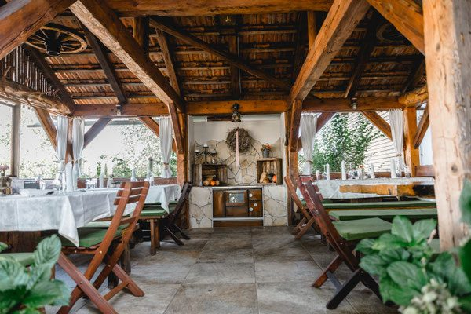

Adresse
GenussHirsch
vulgo Hendlstub’n Palz
Donnersdorf 40
8484 Unterpurkla
Steiermark, Österreich
Kontakt
Im Süden des Thermen- und Vulkanlands Steiermark, in der Region Bad Radkersburg, entlang der Vulkanland Route 66.
GenussHirsch
vulgo Hendlstub’n Palz
Donnersdorf 40
8484 Unterpurkla
Steiermark, Österreich
Wir liegen in Donnersdorf bei Unterpurkla, in der Thermenregion Bad Radkersburg – gut erreichbar mit dem Auto und beliebtes Ziel für Radausflüge.
Wir binden bewusst keine externe Karte ein – damit diese Seite ohne Cookie-Banner auskommt.
Nachricht
Für Fragen zu Karten, Gruppen, Gutscheinen oder einem besonderen Anlass.
Für einen Tisch nutzen Sie bitte die Reservierung, für kurzfristige Anliegen am selben Tag den Telefonanruf.
